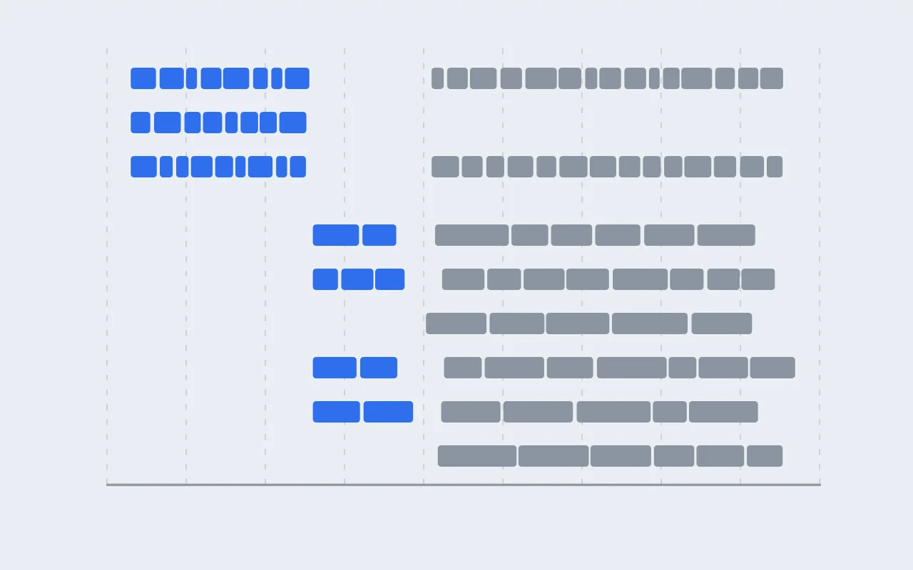

DFT 실습 [13] — 64원자 셀 180건 돌리기: 노드 세 종류로 8.7일
이번 글에는 계산 결과가 거의 없고, 계산을 돌린 얘기만 있습니다. 고엔트로피 Na 층상 산화물 여섯 조성에서 배열을 30개씩 골라 64원자 셀 180개를 DFT로 이완했는데, 무엇을 골랐고 무엇이 나왔는지는 연구 [2]에 따로 적어 두었습니다. 여기서는 그 180건을 어느 노드에 어떻게 넣었고, 노드마다 얼마나 걸렸고, 처음 잡은 일정이 왜 크게 빗나갔는지를 씁니다.

이 글에 나오는 말
- 노드와 코어: 클러스터를 이루는 컴퓨터 한 대가 노드이고, 그 안의 CPU 코어들이 계산을 나눠 맡습니다. 이 글의 노드는 코어가 6개, 20개, 48개인 세 종류입니다.
- 하이퍼스레딩: 물리 코어 하나를 운영체제에 스레드 둘로 보이게 하는 기능입니다. 코어 6개짜리 노드가 12코어처럼 보입니다.
- PBS: 클러스터의 잡 스케줄러입니다. qsub로 잡을 넣고, qstat으로 잡 상태를, pbsnodes로 노드 상태를 봅니다.
- 이온 스텝: 이완 계산에서 원자와 격자를 한 번 옮기는 단위입니다. 스텝마다 전자 상태를 다시 수렴시키고, 모든 원자에 걸리는 힘이 0.02 eV/Å 아래로 내려가면 계산이 끝납니다.
- KPAR와 NCORE: VASP의 병렬 설정입니다. KPAR는 k점을 몇 묶음으로 나눠 동시에 계산할지, NCORE는 밴드 하나를 코어 몇 개가 나눠 계산할지를 정합니다.
- 바닥 후보와 다양성 후보: 조성마다 CHGNet 에너지가 가장 낮은 배열 10개가 바닥 후보, 이웃 환경이 서로 가장 다른 배열 20개가 다양성 후보입니다(연구 [2]). 여섯 조성이라 60건과 120건입니다.
- 코어·시간: 쓴 코어 수에 걸린 시간을 곱한 값입니다. 코어 48개로 1시간을 돌면 48 코어·시간입니다.
요약
질문. 64원자 셀 180건을 연구실 클러스터에서 얼마나 걸려 끝낼 수 있는지, 노드 종류에 따라 속도가 얼마나 다른지.
방법. 노드 하나에 계산 하나만 넣기로 하고, 지정한 노드가 비면 그 노드에 맞는 잡스크립트를 만들어 넣는 스크립트로 180건을 차례로 제출했습니다. 끝난 뒤 OUTCAR 180개에서 코어 수, 병렬 설정, 이온 스텝 수, 걸린 시간을 모았습니다.
답. 10월 3일 아침에 시작해 11일 밤에 끝나 8.7일이 걸렸고, 180건 모두 힘 기준을 만족하며 수렴했습니다. 한 건의 중앙값은 48코어 노드 2.8시간, 20코어 노드 3.7시간, 6코어 노드 10.8시간이었고, 이온 스텝 하나에 든 코어·분은 48코어 노드가 6코어 노드의 2.2배였습니다. 1.5일로 잡았던 일정이 늘어난 것은 큰 노드를 쓸 수 있는 기간이 짧았던 것과, NCORE가 기본값 1로 돌아 48코어 노드가 파일럿보다 두 배 느렸던 것 때문으로 보고 있습니다.
돌린 것
계산 하나는 Na 16개, 전이금속 16개, 산소 32개로 된 64원자 셀입니다. 전이금속 자리에는 Mn 8개와 Fe, Ni, Ti가 조성에 따라 섞여 있고, 배열은 기계학습 퍼텐셜 CHGNet으로 먼저 이완해 둔 것 중에서 골랐습니다(실습 [11]). 지금까지 실습에서 돌린 건 많아야 24원자 셀이었고 한 번에 열 건 남짓이었습니다. 원자 수가 세 배 가까이, 계산 수가 열 배 넘게 늘어나니 그동안 신경 쓰지 않던 것들이 하나씩 걸리기 시작했습니다.
아래는 C3 조성(NaMn₀.₅Fe₀.₂₅Ni₀.₁₂₅Ti₀.₁₂₅O₂) 바닥 후보 하나의 INCAR입니다. 180건 모두 SYSTEM, MAGMOM, U 관련 세 줄이 조성에 따라 다르고, KPAR는 들어간 노드에 따라 4 또는 2입니다. 나머지는 같습니다. 원래 파일에는 MAGMOM 64개를 다 풀어 썼는데, 여기서는 VASP가 받아 주는 개수*값 꼴로 줄였습니다.
SYSTEM = NaMn0.5Fe0.25Ni0.125Ti0.125O2 s2m01 (low) FM, GGA+U
ENCUT = 520
ISMEAR = 0
SIGMA = 0.05
ISPIN = 2
MAGMOM = 18*0.0 8*4.0 4*5.0 2*2.0 32*0.0 ! Na16 Ti2 / Mn8 / Fe4 / Ni2 / O32
LREAL = .FALSE.
LORBIT = 11
NSW = 100 ! 바깥 루프 ON: 이온 스텝 최대 100회
IBRION = 2 ! 공액구배법으로 원자 이동
ISIF = 3 ! 원자 + 격자(모양·부피)까지 전부 이완
EDIFFG = -0.02 ! 종료 조건: 모든 힘 < 0.02 eV/A
LDAU = .TRUE.
LDAUTYPE = 2
LDAUL = -1 -1 2 2 2 -1 ! POSCAR 원소 순서: Na Ti Mn Fe Ni O
LDAUU = 0 0 3.9 5.3 6.2 0
LDAUJ = 0 0 0 0 0 0
LMAXMIX = 4
ALGO = Fast
EDIFF = 1E-5
KPAR = 4k점은 축 길이 × k점 수가 23 Å 근처가 되도록 축마다 정했습니다(실습 [5]에서 정한 규칙). 이 셀에서는 2 × 2 × 4입니다.
Gamma mesh (a*k ~ 23 A)
0
Gamma
2 2 4
0 0 0먼저 노드부터
계산을 넣기 전에 클러스터에 무엇이 있는지부터 확인했습니다. pbsnodes로 보면 노드는 네 종류였습니다.
| 노드 | 대수 | PBS가 보는 코어 | 실제로 쓸 코어 | 메모리 |
|---|---|---|---|---|
| n1 계열 | 19 | 12 | 6 (하이퍼스레딩) | 31 GB |
| n2 계열 | 17 | 6 | 6 | 31 GB |
| n37, n38 | 2 | 20 | 20 | 31 GB |
| sn1 | 1 | 48 | 48 | 251 GB |
처음에 이상하다고 느낀 건 n1 계열이었습니다. PBS는 12코어라고 하는데, 노드마다 6코어짜리 잡이 두 개씩 들어가 있었고 제 첫 파일럿 계산도 그런 노드 하나에서 다른 분의 잡과 같이 돌고 있었습니다. 노드에 직접 들어가 보니 이랬습니다.
$ ssh n1 "lscpu | grep -E '^CPU\(s\)|Thread|Core\(s\)|Socket'"
CPU(s): 12
Thread(s) per core: 2
Core(s) per socket: 6
Socket(s): 1물리 코어는 6개이고, 코어 하나가 스레드 둘로 보이는 하이퍼스레딩이 켜져 있었습니다. 12코어처럼 보여도 실제 계산은 코어 6개가 하는 것이라, 6코어 잡 두 개가 들어가면 둘이 같은 코어를 나눠 쓰게 됩니다.
한 노드에 병렬(MPI) 계산 두 개를 같이 넣으면 얼마나 손해인지는 그 전에 이미 한 번 겪었습니다. 실습 [12]의 작은 Na 배열 계산에서, 같은 계산의 이온 스텝 하나가 노드를 혼자 쓸 때 88초였는데 다른 계산과 한 노드에 같이 넣었을 때는 1,200~1,400초가 걸렸습니다. 절반 속도 정도가 아니라 열 배 넘게 느려졌고, 두 계산의 프로세스가 같은 코어에 붙었던 것으로 보고 있습니다. 그래서 이번 계산은 처음부터 노드 하나에 계산 하나로 정했습니다. 하이퍼스레딩 노드는 논리 코어 12개를 다 요청해서 다른 잡이 못 들어오게 하고, 프로세스는 물리 코어 수만큼만 띄웁니다.
#PBS -l select=1:ncpus=12:mpiprocs=6:ompthreads=1:host=n3계산 노드끼리 인피니밴드로 연결돼 있지 않아서, 노드 여러 대를 묶어 계산 하나를 돌리는 것도 하지 않았습니다.
파일럿 두 건
180건을 넣기 전에 C3 조성의 64원자 셀로 파일럿을 두 건 돌렸습니다. 첫 번째는 위 사정을 모르고 넣은 것이라 조건이 나빴습니다.
| 파일럿 1 | 파일럿 2 | |
|---|---|---|
| 노드 | 하이퍼스레딩 노드, 다른 분의 잡과 같이 | sn1 혼자, 48코어 |
| 출발 구조 | 이상적인 격자 | CHGNet으로 이완한 구조 |
| ALGO | 기본값 | Fast |
| 첫 이온 스텝 | 13,805초 (3.8시간) | 824초 (14분) |
| 둘째 이온 스텝 | 약 6,500초 | 350초 |
| 끝날 때까지 | 20스텝, 1.33시간 |
첫 스텝끼리 17배 차이인데, 노드, 출발 구조, ALGO가 한꺼번에 바뀌어서 무엇이 얼마나 기여했는지는 가를 수 없습니다. 본 계산은 파일럿 2와 같은 조건으로 갈 거라 따로 가르지는 않았습니다.
일정은 파일럿 2를 기준으로 잡았습니다. 6코어 노드까지 다 쓸 수 있다고 치면 시간당 다섯 건쯤, 180건이 1.5일이라는 계산이 나왔습니다. 그런데 그날 쓸 수 있는 노드가 sn1, n37, n38 세 대여서, 이 셋으로 다시 계산하니 5일 남짓이었습니다. 실제로는 8.7일 걸렸습니다.
제출 스크립트
180건을 손으로 하나씩 qsub하기는 어렵고, 노드는 연구실 분들과 같이 쓰니 언제 비는지도 알 수 없습니다. 그래서 폴더 목록을 받아 두고, 지정한 노드 중 빈 곳이 생기면 그 노드에 맞춰 잡스크립트를 만들어 하나씩 넣는 스크립트를 썼습니다. 아래는 줄인 것입니다.
#!/bin/bash
# 사용법: bash scripts/submit_dft.sh "sn1:48 n37:20 n38:20" <폴더1> <폴더2> ...
# 노드:ncpus:mpiprocs (하이퍼스레딩 노드는 n3:12:6 처럼)
HOSTSPEC=$1; shift
for d in "$@"; do
# 이미 돈 폴더는 넘어감
[ -e "$d/OUTCAR" ] && { echo "$d 건너뜀"; continue; }
# 지정한 노드 중 빈 곳이 생길 때까지 1분마다 확인
free=""
while [ -z "$free" ]; do
for hs in $HOSTSPEC; do h=${hs%%:*}
if [ "$(pbsnodes -aSj | awk -v h=$h '$1==h {print $NF}')" = "--" ]; then
free=$h; rest=${hs#*:}; nc=${rest%%:*}; mp=${rest#*:}; [ "$mp" = "$rest" ] && mp=$nc; break
fi
done
[ -z "$free" ] && sleep 60
done
# 코어가 6개 이하면 KPAR를 2로
kp=4; [ $mp -le 6 ] && kp=2
sed -i '/^KPAR/d; /^NCORE/d' $d/INCAR; echo "KPAR = $kp" >> $d/INCAR
# (잡스크립트 작성 부분은 생략: #PBS -l select=1:ncpus=$nc:mpiprocs=$mp:ompthreads=1:host=$free)
jid=$(cd $d && qsub jobscript)
# 잡이 실제로 돌기 시작한 걸 보고 다음 폴더로
until qstat -f $jid | grep -q "job_state = R"; do sleep 10; done
done마지막 until 줄이 없으면 PBS가 그 노드를 사용 중으로 표시하기 전에 같은 노드에 다음 잡을 또 넣을 수 있습니다.
넣는 순서는 바닥 후보 60건이 먼저였고, 조성을 번갈아 C1의 1번, C2의 1번, …, C6의 1번, 다시 C1의 2번 식으로 넣었습니다. 중간에 멈추더라도 여섯 조성의 결과가 고르게 쌓이게 하려는 것이었습니다. 다양성 후보 120건은 바닥 후보가 거의 끝난 뒤에 같은 방식으로 넣었습니다.
8.7일 동안
첫 건이 들어간 게 10월 3일 아침 7시 43분입니다. 처음 이틀 반은 sn1, n37, n38 세 대로 바닥 후보를 돌렸고, 5일 저녁까지 49건이 끝났습니다. 그때 세 노드를 연구실 선배들께 넘겨 드려야 해서, 남은 바닥 후보 11건은 하이퍼스레딩 노드 다섯 대로 옮겼습니다(10월 5일 18시 14분). 6일 밤부터는 다양성 후보 120건을 하이퍼스레딩 노드 여덟 대에 넣기 시작했고, 7일 아침부터 sn1과 n38을 다시 쓸 수 있게 되어 거기에도 같이 넣었습니다. 그림 1에서 10월 5일 저녁부터 7일 아침까지 sn1과 n38 줄이 비어 있는 게 그 기간입니다.
마지막 건은 10월 11일 23시 41분에 끝났습니다. 180건 모두 힘 기준 0.02 eV/Å를 만족하고 끝났고, 다시 돌린 건은 없었습니다. 동시에 돈 계산은 많을 때 열 건이었고, 다 합치면 17,456 코어·시간이 들었습니다. 하루에 끝난 건수는 9~30건이었는데, 큰 노드가 빠져 있던 10월 6일이 9건으로 가장 적었습니다.
노드별로 얼마나 걸렸나
계산이 다 끝난 뒤 OUTCAR 180개에서 코어 수, KPAR, NCORE, 이온 스텝 수, 걸린 시간을 모아 봤습니다.
| 노드 | 건수 | 한 건 (중앙값, 범위) | 스텝당 | 스텝당 코어·분 |
|---|---|---|---|---|
| sn1 (48코어) | 49 | 2.8시간 (1.7~9.3) | 8.6분 | 413 |
| n37·n38 (20코어) | 49 | 3.7시간 (1.3~10.9) | 11.6분 | 232 |
| 6코어 노드 10대 | 82 | 10.8시간 (3.4~28.9) | 31.1분 | 187 |
한 건의 이온 스텝 수는 어느 노드에서든 중앙값이 20~21이라서, 노드끼리는 스텝당 시간으로 비교하면 됩니다. 20코어에서 48코어로 가면 코어는 2.4배인데 스텝은 1.35배만 빨라졌습니다. 6코어에서 20코어로 갈 때는 코어 3.3배에 2.7배 빨라졌으니 이쪽은 꽤 잘 늘어난 편입니다.
마지막 열이 이 차이를 다른 쪽에서 보여 줍니다. 스텝 하나에 들어간 코어·분이 48코어 노드에서는 413으로, 6코어 노드(187)의 2.2배였습니다. 한 건을 빨리 끝내려면 큰 노드가 낫지만, 같은 코어·시간으로 더 많은 계산을 끝내려면 작은 노드가 나았던 셈입니다. NSC의 Peter Larsson은 평소 계산에는 병렬 효율이 50% 밑으로 떨어지는 지점의 노드 수를 쓴다고 적었는데[1], 6코어 노드를 기준으로 하면 이번 48코어 계산의 효율은 45%였습니다.
그런데 숫자를 보다가 이상한 점을 하나 찾았습니다. 파일럿 2는 같은 sn1에서 20스텝에 1.33시간, 스텝당 4.0분이었는데 본 계산의 sn1은 스텝당 8.6분이었습니다. 같은 C3 조성끼리 봐도 스텝당 7~10분이라, 조성 탓은 아니었습니다. 표에서 NCORE 열을 보니 180건이 전부 1이었습니다. 파일럿 2는 INCAR에 NCORE = 4를 넣고 돌렸습니다. 위 제출 스크립트의 sed 줄이 KPAR와 NCORE를 같이 지우고 KPAR만 다시 써 넣어서, 본 계산은 모두 NCORE 기본값으로 돈 것입니다.
NCORE는 밴드 하나를 코어 몇 개가 나눠 계산할지 정하는 값입니다. VASP 위키에는 원자 100개 안팎이면 NCORE = 4가 잘 맞는 편이고, 기본값 1은 코어가 8개 정도까지인 작은 계산이나 느린 네트워크에 맞는 값이라고 나와 있습니다[2]. 그래서 6코어 노드에서는 NCORE = 1이 문제가 없었겠지만, 48코어 노드가 잘 안 늘어난 것과 파일럿보다 두 배 느렸던 것은 이 때문일 가능성이 크다고 보고 있습니다. 같은 셀로 NCORE만 바꿔 돌려 보지는 않아서, 이게 원인의 전부인지는 아직 모릅니다.
돌아보면 첫 건이 끝났을 때 OUTCAR에서 병렬 설정이 적힌 줄을 한 번만 봤어도 바로 알았을 겁니다.
grep -E "distrk|distr:" OUTCARdistrk 줄에는 k점 묶음 수(KPAR), distr 줄에는 VASP가 실제로 쓴 NCORE가 나옵니다. INCAR에 적은 값과 VASP가 실제로 쓴 값이 다를 수 있어서(OpenMP 스레드를 쓰면 NCORE가 1로 바뀌는 것처럼[2]), 확인은 OUTCAR로 하는 게 맞습니다.
오래 걸린 계산들
한 건 시간은 노드보다 조성에 따라 더 크게 달랐습니다. Fe만 섞인 C1은 이온 스텝 중앙값이 13이었는데, C4, C5, C6은 28~30이었습니다. 60스텝을 넘긴 계산도 세 건 있었습니다.
가장 길었던 건 C2의 다양성 후보 하나(s2r0163)로, sn1에서 67스텝, 9.3시간이 걸렸습니다. 48스텝째에 들여다봤을 때도 에너지가 꾸준히 내려가고 있었는데, 그대로 두니 67스텝에서 끝났습니다. 다양성 후보는 일부러 특이한 배열을 고른 것이라 CHGNet이 잡아 준 출발 구조가 DFT의 바닥에서 먼 경우가 바닥 후보보다 많았던 것으로 보입니다. C6의 바닥 후보 하나(s1r0114)는 62스텝이었는데, 힘이 0.05 eV/Å 밑으로 내려간 뒤에도 47스텝을 더 가면서 원자 배치가 바뀐 계산입니다. 다양성 후보는 힘 기준을 0.05 eV/Å로 느슨하게 돌릴까도 생각했는데, 이 계산을 보고 0.02를 그대로 뒀습니다(연구 [2] 5절).
시간으로 가장 오래 걸린 다섯 건은 모두 6코어 노드에서 돈 C2, C5, C6 계산으로, 24~29시간이었습니다.
계산이 길어지면 자꾸 들어가서 확인하게 됩니다. 처음엔 이렇게 직접 쳤습니다. C1의 무작위 배열 하나(s1r0000)를 n37에서 돌리던 중이었습니다.
$ d=calc/NaMn0.5Fe0.5O2/x1.00/sc64_s1r0000_fm/r1
$ grep "F=" $d/vasp.log | tail -3
11 F= -.38834262E+03 E0= -.38834262E+03 d E =-.993290E-03 mag= 72.0000
12 F= -.38834252E+03 E0= -.38834252E+03 d E =-.884466E-03 mag= 72.0000
13 F= -.38834267E+03 E0= -.38834267E+03 d E =-.103721E-02 mag= 72.0000
$ grep "LOOP+" $d/OUTCAR | awk '{s+=$NF; l=$NF; n=NR} END{printf "이온 스텝 %d개, 지금까지 %.1f시간, 최근 스텝 %.0f분\n", n, s/3600, l/60}'
이온 스텝 13개, 지금까지 2.5시간, 최근 스텝 10분
$ grep -A 66 "TOTAL-FORCE" $d/OUTCAR | tail -64 | awk '{f=sqrt($4^2+$5^2+$6^2); if(f>m)m=f} END{printf "현재 최대 힘 %.3f eV/A (목표 0.02)\n", m}'
현재 최대 힘 0.043 eV/A (목표 0.02)에너지는 0.2 meV 안에서 오르내리고 최대 힘이 0.043 eV/Å이니 몇 스텝 안에 끝나겠다고 봤고, 실제로 14스텝, 2.7시간에 끝났습니다. 이걸 잡마다 치기는 번거로워서 ~/.bashrc에 함수로 넣었습니다. 지금 돌고 있는 내 잡마다 한 줄씩 스텝 수, 지난 시간, 최근 스텝 시간, 최대 힘을 보여 줍니다.
dftrun() {
for j in $(qselect -u $USER -s R); do
d=$(qstat -f $j | tr -d '\n\t ' | grep -o 'PBS_O_WORKDIR=[^,]*' | cut -d= -f2)
name=$(qstat -f $j | awk '/Job_Name/ {print $3}')
[ -e "$d/OUTCAR" ] || { printf "%-12s 아직 시작 전\n" $name; continue; }
n=$(grep -c "F=" $d/vasp.log)
stat=$(grep "LOOP+" $d/OUTCAR | awk '{s+=$NF; l=$NF} END{printf "%.1f시간 경과, 최근 스텝 %.0f분", s/3600, l/60}')
na=$(head -7 $d/POSCAR | tail -1 | awk '{s=0; for(i=1;i<=NF;i++) s+=$i; print s}')
fm=$(grep -A $((na+2)) "TOTAL-FORCE" $d/OUTCAR | tail -$na | awk '{f=sqrt($4^2+$5^2+$6^2); if(f>m)m=f} END{printf "%.3f", m}')
printf "%-12s %2d스텝, %s, 최대 힘 %s\n" $name $n "$stat" $fm
done
}원자 수는 POSCAR 일곱째 줄에서 읽어서, 64원자든 24원자든 같은 함수로 봅니다.
끝나고 보니
1.5일로 잡은 일정이 8.7일이 된 건 대부분 노드 사정이었습니다. 큰 노드를 쓸 수 있었던 건 처음 이틀 반(세 대)과 10월 7일부터(두 대)였고, 계산의 절반 가까이(82건)는 스텝당 31분인 6코어 노드에서 돌았습니다. 거기에 48코어 노드는 파일럿보다 두 배 느렸고, 그건 NCORE가 1로 돈 탓으로 보고 있습니다. 파일럿 한 건으로 일정을 잡을 때 이 두 가지가 다 빠져 있었습니다.
이렇게 모은 180개 셀에서 Mn 자리마다 가수와 결합 길이를 뽑는 방법은 다음 글에 쓰겠습니다. 그 값으로 무엇을 찾았는지는 연구 [3]에 있습니다.
참고
- Peter Larsson, "Running Big on Lindgren", NSC 블로그 (2012). nsc.liu.se/~pla/blog/2012/03/23/scalinglindgren
- VASP Wiki, "NCORE". vasp.at/wiki/NCORE

Seok
연구하면서 개발합니다. 배터리 재료를 원자 단위에서 계산하는 법을 바닥부터 배우는 중입니다. → 글 더 보기